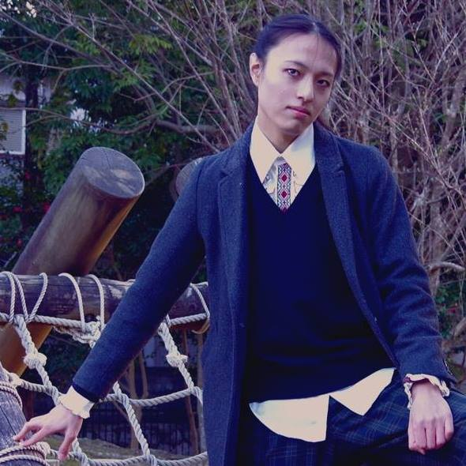

<!DOCTYPE html>
<html>
<head>
	<title>suneo3476's Github Pages</title>
	<style type="text/css">
	</style>
	<link rel="stylesheet" href="./css/bootstrap.min.css">
	<link rel="stylesheet" type="text/css" href="./css/main.css.css">
	<link href="https://use.fontawesome.com/releases/v5.6.1/css/all.css" rel="stylesheet">
</head>

<body>

<div class="container">

<!-- ヘッダメニュー -->
<div class="header">
<div class="menu">
	<a href="#intro">#自己紹介</a>
	<a href="#works">#スキルと制作物</a>
	<a href="#activities">#活動</a>
	<a href="#sns">#SNS</a>
	<a href="#contacts">#連絡先</a>
</div>

<!-- タイトル -->
<div class="title">
	<!-- このタイトルにはアンダーライン -->
	<div>
		<span class="portfolio_title">suneo3476's Portfolio</span> 
	</div>
	<!-- サブテキストは小さく -->
	<div>
		<span class="portfolio_subtext">suneo3476のポートフォリオサイトです</span>
	</div>
</div>

<!-- 本文（自己紹介・スキルと制作物・SNS・連絡先） -->
<div class="body">
	<h2>お知らせ</h2>
	<p>
		<strong>2019年3月27日　アラートループ体験コーナーを設置しました！　<a href="alertloop.html" target="_blank">こちら</a></strong><br>
		<strong>2019年3月25日　このポートフォリオサイトを公開しました！</strong><br>
	</p>
	<h2 id="intro">自己紹介</h2>
	<div>
		<p class="imagebox" style="float:left">
			
		</p>
		<p>
			<strong>藤森　咲紅（Fujimori Saku）</strong><br>
			<ul style="list-style:none;">
				<li>春からプログラマになる人文系の大学院生です。</li>
				<li>出身：静岡県浜松市</li>
				<li>趣味：ボードゲーム、DTM、ピアノ、郷土地理</li>
			</ul>
			<ul style="list-style: none">
				<li>静岡県立浜松工業高等学校　情報技術科　卒業</li>
				<li>国立大学法人静岡大学　情報学部情報科学科　卒業</li>
				<li>同大学大学院　総合科学技術研究科情報学専攻　卒業予定</li>
			</ul>
		</p>
	</div>

	<h2 id="works" style="clear:left">スキルと制作物</h2>

	<h3><strong>Wikipediaライクな教科書システムの実装（公開終了）</strong></h3>
	<div>
		<span class="tag"><strong>CentOS 7</strong></span>
		<span class="tag"><strong>Apache2</strong></span>
		<span class="tag"><strong>MySQL</strong></span>
		<span class="tag"><strong>PHP</strong></span>
		<span class="tag"><strong>MediaWiki</strong></span>
		<span class="tag"><strong>JavaScript</strong></span>
	</div>
	<p>
		学部卒業研究で作ったものです。紙の教科書みたいに最初から最後まで流れのある編纂物とは違った、
		ニコニコ大百科のような教科書があったら面白いよね、という発想で作ったものです。<br>
		2014年度に大学のドメインで公開して、静岡大学情報学部情報社会学科で開講の科目「公共圏論」で実際に学生に触ってもらいました。
		WikiエンジンはWikipediaが採用している <strong>MediaWiki</strong> です。
		LAMP構成で、必要に応じてフロントエンドを <strong>JavaScript</strong> を書いてました。
		<br>余談として、学術的新規性と言われると詰まることもあり個人的には黒歴史なんですが、
		後にある後輩が当時「これみたいなものを作りたい」とWebエンジニアを志したと語ってくれて、
		けして無駄ではなかったなと思いました。
	</p>
	<div class="ss">
		<p class="imagebox">
			
			<span class="caption">いわゆる「タグ」のページ</span>
		</p>
		<p class="imagebox">
			
			<span class="caption">ひとつの記事は分量が決まっています。</span>
		</p>
	</div>

	<h3>ポケモンBGMのYoutube検索を支援するタウンマップ型アプリ<strong><a href="https://suneo3476.github.io/poke" target="_blank"><i class="fas fa-external-link-alt"></i></a></strong></h3>
	<div>
			<span class="tag"><strong>Processing</strong></span>
			<span class="tag"><strong>JavaScript</strong></span>
	</div>
	<p>
		2015年作。ゲームのBGMを耳コピしてピアノアレンジして演奏するのが趣味の私にとって、
		原曲の確認作業は必須で、またアレンジ作品を視聴するのにもYoutubeを利用していました。
		しかし、マップの名前をいちいち憶えているわけでもなく、
		アップロード者のつけたタイトルにもしばしば表記ゆれが見られました。
		極めつけは同じBGMが複数の別名のマップで使われているケースで、
		想定される範囲でORとANDを駆使して探し出す必要があります。
		<br>当然<strong>「やってられるか！」</strong>となり、タウンマップをクリックすれば
		一発で検索結果に飛べるようなものを作ることにした結果が、このアプリです。
		<br>デスクトップ上では、マウスオーバーしたエリアと共通のBGMのエリアが赤く点滅します。
		タッチデバイスを考慮せずに作ったので、これについては改良の余地があります。
		<br>実装はビジュアルデザインを用途とする<strong>Processing</strong>言語を使い、
		Webブラウザ上で使用可能にするため <strong>JavaScript</strong> 移植版の
		<strong>Processing.js</strong> で書きました。画像を用いないので、
		ソースコード単体では非常に軽量に動作するアプリになります。
		<br>ソースコードは<a href="https://github.com/suneo3476/pokedp-map" target="_blank">Github</a>にあります。

	</p>
	<div class="ss">
		<p class="imagebox">
			
			<span class="caption">ダイヤモンド・パールの「シンオウ地方」</span>
		</p>
		<p class="imagebox">
			
			<span class="caption">ハートゴールド・ソウルシルバーの「ジョウト地方」「カントー地方」</span>
		</p>
	</div>

	<h3>浜松市立追分小学校ホームページリニューアル<a href="http://www.city.hamamatsu-szo.ed.jp/oiwake-e/index.html" target="_blank"><i class="fas fa-external-link-alt"></i></a></h3>
	<div>
		<span class="tag"><strong>静的サイト</strong></span>
		<span class="tag"><strong>レスポンシブ</strong></span>
	</div>
	<p>
		2015年に静岡大学情報学部「地域連携推進室」によるボランティア募集を受けて参加・制作を行い、2016年４月に公開されたものです
		(<a href="http://www.inf.shizuoka.ac.jp/approach/area.html" target="_blank">詳細</a>)。
		３グループでのコンペ形式で企画・制作を行い、自グループ案が採用されたものになります。グループで設計と実装を分業して、私は実装を担当しました。<br>
		テキストサイト風味あふれる旧サイトから、スマートフォン表示対応のモダンなサイトに生まれ変わりました。
		これには、学校が保護者への連絡チャネルとしてホームページを活用したいというニーズがあり、
		多くの保護者がスマートフォンを利用しているという背景がありました。<br>
		手軽にレスポンシブ対応するため、導入が容易なオリジナルBootstrapテーマの
		「<strong><a href="http://honokak.osaka/" target="_blank">Honoka</a></strong>」を使用しました。
	</p>
	<div class="ss">
		<p class="imagebox">
			
			<span class="caption">右上のボタンをタップすると</span>
		</p>
		<p class="imagebox">
			
			<span class="caption">メニューが開きます</span>
		</p>
	</div>

	<h3><strong>「はままつポンポンまつり」ホームページ制作・運用（公開終了）</strong></h3>
	<div>
		<span class="tag"><strong>静的サイト</strong></span>
		<span class="tag"><strong>レスポンシブ</strong></span>
	</div>
	<p>
		2015年〜2016年、NPO法人・日本モータースポーツ振興会さんのイベント「はままつポンポンまつり」のホームページ制作・運用を行いました。
		私自身も「はまポン」の実行委員会に加わり、協賛や出展内容の追加・変更の連絡を受けてホームページの更新を行いました。
		<br>オリジナルBootstrapテーマの「<strong><a href="http://honokak.osaka/" target="_blank">Honoka</a></strong>」を使用しました。
		<br>私の委員会退出後、ページは作り変えられたようで、
		<a href="http://hamapon.web.fc2.com/index.html" target="_blank">現在のページ</a>は当時のものとは異なります。
	</p>
	<div class="ss">
		<p class="imagebox">
			
			<span class="caption">当時のトップページ</span>
		</p>
		<p class="imagebox">
			
			<span class="caption">当時の出展ページ</span>
		</p>
	</div>

	<h3><strong>このポートフォリオサイト</strong></h3>

	<h2>他に公開しているもの</h2>
	<ul>
		<li>
			<p>
				ピアノ楽譜
				<br><a href="./score/index.html" target="_blank">score and music</a>
			</p>
		</li>
		<li>
			<p>
				ドラえもんデータ
				<br><a href="./dora/index.html" target="_blank">doraemon material</a>
			</p>
		</li>
		<li>
			<p>
				浜松郷土研究会
				<br><a href="./unagi/index.html" target="_blank">Hamamatsu city</a>
			</p>
		</li>
		<li>
			<p>
				アラートループを体験しよう！
				<br><a href="alertloop.html" target="_blank">アラートループ体験</a>
			</p>
		</li>
	</ul>

	<h2 id="sns">SNS</h2>
	<ul>
		<li>
			<p>
				<strong><a href="https://qiita.com/suneo3476" target="_blank">Qiita:suneo3476</a></strong><br>
			</p>
		</li>
		<li>
			<p>
				<strong><a href="https://github.com/suneo3476" target="_blank">Github:suneo3476</a></strong><br>
			</p>
		</li>
		<li>
			<p>
				<strong><a href="https://speakerdeck.com/suneo3476" target="_blank">SpeakderDeck:suneo3476</a></strong><br>
			</p>
		</li>
		<li>
			<p>
				<strong><a href="https://twitter.com/suneo3476Pro" target="_blank">Twitter:@suneo3476Pro</a></strong><br>
			</p>
		</li>
		<li>
			<p>
				<strong><a href="https://facebook.com/fujimorim" target="_blank">Facebook</a></strong><br>
			</p>
		</li>
		<li>
			<p>
				<strong><a href="https://suneo3476.hateblo.jp/" target="_blank">はてなブログ</a></strong>
				<br>ブログです。
			</p>
		</li>
	</ul>

	<h2 id="contacts">連絡先</h2>
	<p><strong><a href="mailto:suneo3476@gmail.com" target="_blank">suneo3476＠gmail.com</a></strong>までご連絡ください。</p>

</div>

</div>
<script src="./js/bootstrap.min.js"></script>
</body>
</html>
